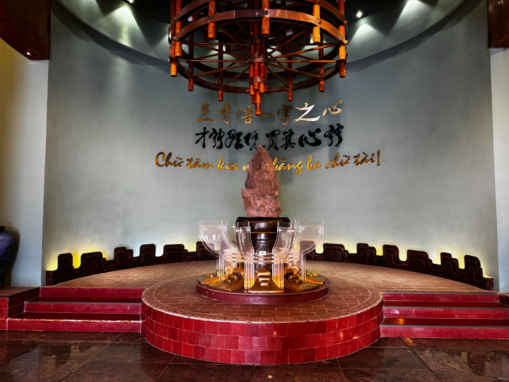
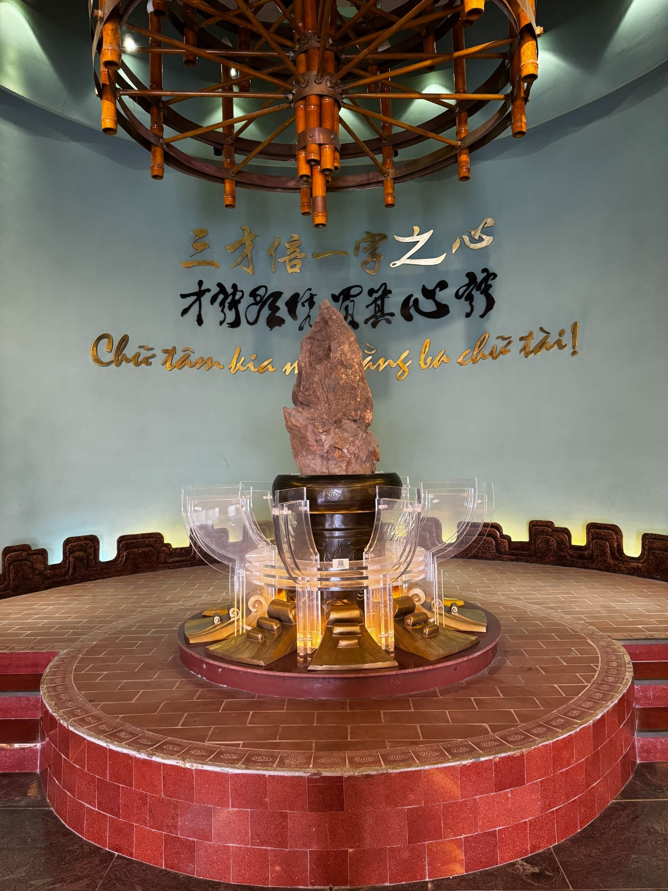
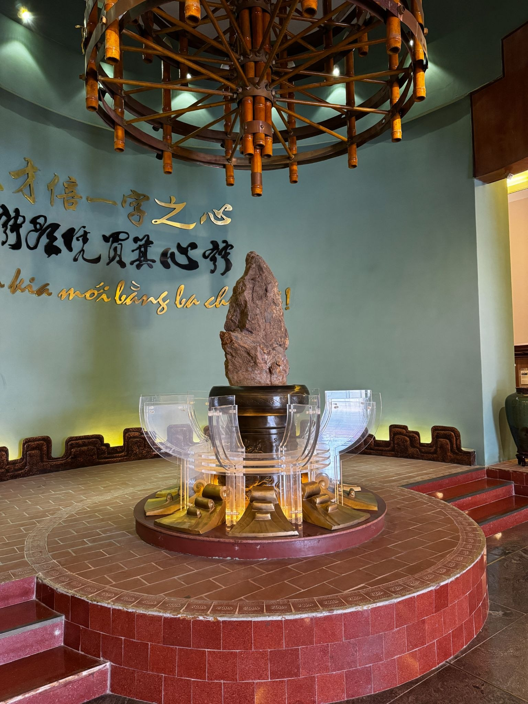

Trong bài
Từ một vùng đất thiêng gắn với cội nguồn dân tộc, một hòn đá mang hình dáng ngòi bút được đặt tại vị trí đặc biệt trong không gian lưu giữ ký ức văn chương. Câu chuyện về hòn đá từ Đền Hùng đến Bảo tàng Văn học không chỉ gợi nhắc về nguồn cội, mà còn mở ra một cách nhìn thú vị về mối liên hệ giữa lịch sử, văn hóa và chữ nghĩa.
Đền Hùng – nơi câu chuyện về hòn đá bắt đầu
Nhắc đến Đền Hùng, người Việt thường nghĩ đến vùng đất thiêng trên núi Nghĩa Lĩnh, nơi gắn với tín ngưỡng thờ cúng các Vua Hùng và câu chuyện về nguồn cội dân tộc. Không gian nơi đây từ lâu đã trở thành một biểu tượng văn hóa đặc biệt, nơi lịch sử, truyền thuyết và ký ức cộng đồng cùng tồn tại.

Nhưng bên cạnh những di tích quen thuộc, Đền Hùng còn gắn với nhiều dấu tích và câu chuyện văn hóa ít được biết đến. Một trong số đó là một hòn đá có hình dáng gợi liên tưởng đến chiếc ngòi bút – một hiện vật sau này được giới thiệu tại Bảo tàng Văn học.
Hình dáng đặc biệt khiến hòn đá trở nên thú vị ngay từ cái nhìn đầu tiên. Trong đời sống hiện đại, ngòi bút là vật dụng quen thuộc với người viết. Nhưng khi một hình hài tương tự xuất hiện giữa không gian văn hóa gắn với cội nguồn dân tộc, nó lại gợi ra nhiều tầng liên tưởng: từ nguồn cội đến chữ nghĩa, từ lịch sử đến văn chương.
Bản thân hòn đá không phải là một tác phẩm văn học theo nghĩa thông thường. Nó không có tên tác giả, không có trang bản thảo hay câu chữ được khắc trên bề mặt. Giá trị của nó nằm nhiều hơn ở hình dáng, câu chuyện và mối liên hệ với không gian văn hóa mà nó xuất phát.
Đó cũng là lý do hòn đá trở thành một hiện vật đáng chú ý khi được đặt trong không gian của bảo tàng. Từ một dấu tích gắn với Đền Hùng, nó bước vào một câu chuyện rộng hơn về chữ viết, người viết và hành trình hình thành văn học Việt Nam.
Đền Hùng và hình dáng gợi nhớ một chiếc ngòi bút
Điều khiến hòn đá trở nên đặc biệt trước hết nằm ở hình dáng. Với phần đầu nhọn và đường nét tự nhiên gợi liên tưởng đến ngòi bút, hiện vật tạo ra một kết nối khá thú vị giữa thiên nhiên và hoạt động sáng tạo của con người.

Nếu một cây bút là công cụ để con người ghi lại suy nghĩ, ký ức và cảm xúc, thì hòn đá lại là một phần của tự nhiên – tồn tại trước cả những trang sách và bản thảo. Đặt hai hình ảnh ấy cạnh nhau, người xem có thể liên tưởng đến một hành trình dài: từ thế giới tự nhiên, con người hình thành ngôn ngữ, tạo ra chữ viết và rồi dùng chữ để lưu giữ lịch sử.
Trong ý nghĩa ấy, câu chuyện về hòn đá từ Đền Hùng không chỉ nằm ở hình dáng “giống ngòi bút”. Nó còn có thể được nhìn như một biểu tượng gợi mở về hành trình của chữ nghĩa.
Từ hòn đá đến biểu tượng của chữ nghĩa

Trong lịch sử, chữ viết luôn giữ vai trò quan trọng trong việc lưu giữ ký ức của một cộng đồng. Những điều được truyền miệng có thể thay đổi theo thời gian, nhưng khi được ghi lại, chúng có cơ hội tồn tại lâu dài hơn.Văn chương cũng bắt đầu từ nhu cầu ấy. Con người dùng chữ để kể chuyện, bày tỏ tình cảm, ghi lại những biến động của thời đại và gửi suy nghĩ của mình đến những người chưa từng gặp.
Bởi vậy, hình ảnh một hòn đá tự nhiên mang dáng dấp ngòi bút có thể gợi nên một câu chuyện giàu tính biểu tượng. Từ đất đá của một vùng đất gắn với cội nguồn, hình ảnh ngòi bút lại dẫn người xem đến thế giới của chữ nghĩa.
Đây cũng là cách một hiện vật có thể tạo ra nhiều lớp liên tưởng mà không cần quá nhiều lời thuyết minh. Người xem bắt đầu từ hình dáng, tìm hiểu nguồn gốc rồi tự kết nối nó với câu chuyện lớn hơn về văn hóa và di sản văn học.
Khi một hiện vật kể chuyện thay cho những trang sách
Một trong những điều thú vị khi tham quan bảo tàng là người xem không nhất thiết phải bắt đầu câu chuyện bằng một cuốn sách. Đôi khi, một hiện vật nhỏ cũng đủ để mở ra một hành trình khám phá.
Hòn đá hình ngòi bút là một ví dụ như vậy. Từ câu hỏi “Vì sao hòn đá lại có hình dáng này?”, người xem có thể tìm hiểu về nguồn gốc của hiện vật, Đền Hùng, rồi tiếp tục đặt câu hỏi về ý nghĩa của nó khi được đưa vào không gian bảo tàng.
Cách kể chuyện bằng hiện vật khiến lịch sử văn học trở nên trực quan hơn. Những khái niệm tưởng như trừu tượng như truyền thống, ký ức hay di sản văn học được cụ thể hóa bằng những vật thể có thể quan sát.
Đặc biệt, với những người trẻ vốn quen tiếp nhận thông tin qua hình ảnh, video và các nền tảng số, những hiện vật giàu câu chuyện như vậy có thể trở thành điểm khởi đầu để họ tìm hiểu sâu hơn về văn học.
Đền Hùng, ngòi bút và câu chuyện về cội nguồn văn chương
Có một sự gặp gỡ thú vị giữa hình ảnh Đền Hùng và chiếc ngòi bút. Một bên đại diện cho ký ức về nguồn cội; một bên gợi đến hoạt động sáng tạo và lưu giữ ký ức bằng chữ viết.
Đặt trong không gian bảo tàng, mối liên hệ ấy càng trở nên rõ ràng. Văn chương không sinh ra trong khoảng không. Mỗi tác phẩm đều được tạo nên từ một thời đại, một vùng đất, một cộng đồng và những trải nghiệm cụ thể của con người.
Những câu chuyện về nguồn cội cũng là một phần của đời sống tinh thần mà văn chương đã lưu giữ qua nhiều thế hệ. Từ truyền thuyết, sử liệu đến thơ ca, truyện ký và những tác phẩm hiện đại, hình ảnh đất nước và con người Việt Nam luôn xuất hiện dưới nhiều hình thức khác nhau.
Vì vậy, hòn đá hình ngòi bút có thể được nhìn như một lời gợi nhắc giản dị: trước khi có những trang sách, đã có nhu cầu kể chuyện; trước khi có những tác phẩm được lưu truyền, đã có những ký ức cần được giữ lại.
Từ một hòn đá, người xem có thể nghĩ về chữ viết. Từ chữ viết, nghĩ về văn chương. Và từ văn chương, lại trở về với lịch sử, văn hóa và con người đã tạo nên nó.
Từ Đền Hùng đến Bảo tàng Văn học, hòn đá hình ngòi bút đã mang theo một câu chuyện thú vị về cội nguồn, chữ nghĩa và ký ức. Một hiện vật nhỏ nhưng mở ra nhiều liên tưởng về văn học Việt Nam và hành trình lưu giữ di sản văn học. Đôi khi, để hiểu một câu chuyện lớn, chỉ cần bắt đầu từ một hòn đá nhỏ.
Bảo tàng Văn học Việt Nam